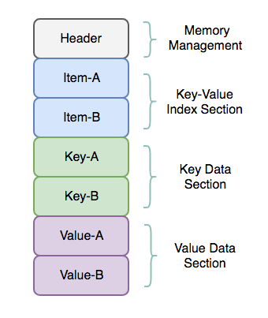

2022-08-13更新
在实盘程序运行中发现shmkv的原始实现代码有bug，修复bug重构版本store 。
~PyShmKV 通过修改pupa内存数据库实现python多进程共享内存数据库，可以在python内将任意数据类型的数据通过kv方式跨进程交互。
内存内数据体结构
pupa 原作者设计是通过双buffer实现的在一写多读情况下无锁的KV数据库，代码由纯C编写，笔者在使用的时候发现核心部分有bug，并且被设计为单独运行的数据库。这里修改为C++并添加封装变成进程内组件，添加类封装，方便创建多个实例。
如下图，是pupa的内存结构设计

其中Header部分由三个结构体组成即item、key和value三部分在内存中的首位置和字节长度。
sec1和sec2分别表示双buffer的内存首位置
size表示预设大小，used表示实际使用量
id=1 or 2 表示当前使用的buffer是哪个
这个内存数据库的设计是通过双buffer的item实现索引一写多读的lock-free。因为要适配共享内存，需要内存连续且有限长度（不能动态创建内存空间），所以对key和value也构建的双buffer的结构，这样可以通过make_snapshot的方式实现内存释放功能。对于item部分，每次set都创建一个新的snapshot操作然后切换，对于
key和value两个部分，只有内存空间写满了之后才进行make_snapshot，通过重新去掉无item指向的内存空间释放内存。
1 2 3 4 5 6 7 8 9 10 typedef struct { unsigned int id; unsigned int size; unsigned int used; size_t sec1_offset; size_t sec2_offset; } skv_store_section;
在这个内存结构设计中，item是真正的索引，item的结构体内部存储key和value在内存中偏移量。使用二分法寻找对应的比对key，从而确定相应的item获取value。
1 2 3 4 5 6 7 typedef struct { size_t key_offset; size_t value_offset; unsigned int key_len; unsigned int value_len; } skv_store_item;
Key和Value为双buffer的存储区域。
Init
size表示空间大小，是否使用超出范围
used表示已经存储的key数量
id表示当前使用过的内存空间
offset这个区域内存首位置偏移量
1 2 3 4 5 6 7 8 9 10 11 12 13 14 15 16 17 18 19 20 21 22 23 24 25 26 27 28 29 30 31 32 33 34 35 36 37 inline size_t skv_store_init ( skv_store_hdr *store_hdr, unsigned int key_count, unsigned int value_size) size_t offset = sizeof store_hdr->item_section.size = key_count; store_hdr->item_section.used = 0 ; store_hdr->item_section.id = SKV_STORE_SECTION_ONE; store_hdr->item_section.sec1_offset = offset; offset += key_count * (long ) sizeof store_hdr->item_section.sec2_offset = offset; offset += key_count * (long ) sizeof store_hdr->key_section.size = SKV_KEY_AVERAGE_LEN * key_count; store_hdr->key_section.used = 0 ; store_hdr->key_section.id = SKV_STORE_SECTION_ONE; store_hdr->key_section.sec1_offset = offset; offset += key_count * SKV_KEY_AVERAGE_LEN; store_hdr->key_section.sec2_offset = offset; offset += key_count * SKV_KEY_AVERAGE_LEN; store_hdr->value_section.size = value_size * key_count; store_hdr->value_section.used = 0 ; store_hdr->value_section.id = SKV_STORE_SECTION_ONE; store_hdr->value_section.sec1_offset = offset; offset += key_count * value_size; store_hdr->value_section.sec2_offset = offset; offset += key_count * value_size; return offset; }
Store Get
Struct
这部分代码里面store_item_wrapper是非常令人费解的设计，这个数据结构是计算某一个item数据结构相对于共享内存的偏移量。
但是无论是set还是get都是增量信息，没有必要搞这样的操作。
1 2 3 4 5 6 7 8 typedef struct { skv_store_item store_item; skv_ctx *ctx; size_t key_offset; } skv_store_item_wrapper;
1 2 3 4 store_item_wrapper.ctx = ctx; store_item_wrapper.key_offset = (key->data - (char *) ctx->store_hdr); store_item_wrapper.store_item.key_len = key->len + 1 ;
bsearch
Get的查找功能使用C语言基础的bsearch函数实现
1 2 3 4 5 void *bsearch (const void *key, const void *base, size_t nitems, size_t size, int (*compar)(const void *, const void *))
key -- 指向要查找的元素的指针，类型转换为
void *。base -- 指向进行查找的数组的第一个对象的指针，类型转换为
void *。nitems -- base 所指向的数组中元素的个数。size -- 数组中每个元素的大小，以字节为单位。compar -- 用来比较两个元素的函数。
memcmp
memcmp把存储区 str1 和存储区 str2 的前 n 个字节进行比较
1 int memcmp (const void *str1, const void *str2, size_t n)
offsetof
offsetof(type, member-designator) 会生成一个类型为
size_t
的整型常量，它是一个结构成员相对于结构开头的字节偏移量。成员是由
member-designator给定的，结构的名称是在 type
中给定的。
get
1 2 3 4 5 6 7 8 9 10 11 12 13 14 15 16 17 18 19 20 21 22 23 24 25 26 27 28 29 30 31 32 33 34 35 36 37 38 39 40 41 42 43 44 45 46 47 48 49 50 51 52 53 54 55 56 57 58 59 60 61 62 63 64 65 66 67 68 69 70 71 72 73 74 75 inline int skv_store_item_compare_ ( const void *p1, const void *p2, void *arg) int ret; char *store_hdr = nullptr ; skv_store_item_wrapper *store_item_wrapper = nullptr ; ret = (int ) ((skv_store_item *) p1)->key_len - (int ) ((skv_store_item *) p2)->key_len; if (ret != 0 ) { return ret; } store_item_wrapper = (skv_store_item_wrapper *) arg; store_hdr = (char *) store_item_wrapper->ctx->store_hdr; if (store_item_wrapper->key_offset == 0 ) { ret = memcmp (store_hdr + ((skv_store_item *) p1)->key_offset, store_hdr + ((skv_store_item *) p2)->key_offset, ((skv_store_item *) p1)->key_len); } else { ret = memcmp (store_hdr + store_item_wrapper->key_offset, store_hdr + ((skv_store_item *) p2)->key_offset, ((skv_store_item *) p1)->key_len); } return ret; } inline int skv_store_item_key_compare (const void *p1, const void *p2) skv_store_item_wrapper *p_store_item_wrapper = nullptr ; p_store_item_wrapper = (skv_store_item_wrapper *) ((char *) p1 - offsetof (skv_store_item_wrapper, store_item)); return skv_store_item_compare_ ((void *) p1, p2, p_store_item_wrapper); } inline int skv_store_get (skv_ctx *ctx, skv_str *key, skv_str *value) skv_store_item *p_cache_item = nullptr ; skv_store_item *p_store_item = nullptr ; skv_store_section *p_item_section = nullptr ; skv_store_item_wrapper store_item_wrapper; p_store_item = (skv_store_item *) SKV_STORE_GET_ADDRESS ( ctx->store_hdr, ctx->store_hdr->item_section); store_item_wrapper.ctx = ctx; store_item_wrapper.key_offset = (key->data - (char *) ctx->store_hdr); store_item_wrapper.store_item.key_len = key->len + 1 ; p_item_section = &ctx->store_hdr->item_section; p_cache_item = static_cast <skv_store_item *>(bsearch (&store_item_wrapper.store_item, p_store_item, p_item_section->used, sizeof skv_store_item_key_compare)); if (p_cache_item == nullptr ) { DEBUG_LOG ("Not found key: %.*s" , key->len, key->data); return SKV_NOT_FOUND; } if (p_cache_item->key_len == 0 ) { DEBUG_LOG ("The length of the key (%.*s) is invalid." , key->len, key->data); return SKV_ERROR; } value->data = (char *) ctx->store_hdr + p_cache_item->value_offset; value->len = p_cache_item->value_len; return SKV_OK; }
Store Set
make_snapshot
每次set操作都是在操作item的snapshot快照。set操作里面，双buffer的切换操作每次切换的是item的双buffer，
key和value的双buffer是在写满数据之后才进行切换，不跟随set操作切换buffer。
make item snapshot
bsearch， add or replace
change item section id（原子操作，lock-free read）
创建snapshot，每次set操作都是在snapshot中操作，然后再切换id指向。1 2 3 4 5 6 7 8 9 10 11 12 13 14 15 16 17 static void pupa_store_item_make_snapshot (skv_ctx *ctx) skv_store_item *p_cache_items = NULL ; skv_store_item *p_store_items = NULL ; p_cache_items = (skv_store_item *) SKV_STORE_GET_SNAPSHOT_ADDRESS ( ctx->store_hdr, ctx->store_hdr->item_section); p_store_items = (skv_store_item *) SKV_STORE_GET_ADDRESS ( ctx->store_hdr, ctx->store_hdr->item_section); if (ctx->store_hdr->item_section.used) { memcpy (p_cache_items, p_store_items, sizeof } ctx->store_items_snapshot = p_cache_items; }
free memory and change
section id
在set操作中，add or
replace都是直接在内存地址的末尾copy新的内容，这样会造成前面的内存中的内容并没有删除，只是修改了指针导致内存空间没有回收利用。
当空间填满的时候需要重新排序copy内容，释放没有item指向的内存空间。1 2 3 4 5 6 7 8 9 10 11 12 13 14 15 16 17 18 19 20 21 22 23 24 25 26 27 28 29 30 31 32 33 34 35 36 37 38 39 40 41 42 43 44 45 46 47 48 49 50 51 52 53 54 55 56 57 58 59 60 61 62 63 64 65 66 67 68 69 70 71 static int skv_store_key_compaction (skv_ctx *ctx, skv_string *key, char **address) int i; char *p = NULL ; size_t used_size; size_t offset; skv_store_item *p_cache_item = NULL ; p = SKV_STORE_GET_SNAPSHOT_ADDRESS (ctx->store_hdr, ctx->store_hdr->key_section); offset = SKV_STORE_GET_SNAPSHOT_OFFSET (ctx->store_hdr->key_section); used_size = 0 ; for (i = 0 ; i < ctx->store_hdr->item_section.used; i++) { p_cache_item = &ctx->store_items_snapshot[i]; memcpy (p + used_size, (char *) ctx->store_hdr + p_cache_item->key_offset, p_cache_item->key_len); p_cache_item->key_offset = offset + used_size; used_size += p_cache_item->key_len; } if ((key->len + 1 + used_size) > ctx->store_hdr->key_section.size) { return SKV_OVERFLOW; } *address = p; ctx->store_hdr->key_section.used = used_size; ctx->store_hdr->key_section.id = SKV_STORE_GET_SEC_SNAPSHOT_ID ( ctx->store_hdr->key_section); return SKV_OK; } static int skv_store_value_compaction (skv_ctx *ctx, skv_string *value, char **address) int i; char *p = NULL ; size_t used_size; size_t offset; skv_store_item *p_cache_item; p = SKV_STORE_GET_SNAPSHOT_ADDRESS (ctx->store_hdr, ctx->store_hdr->value_section); offset = SKV_STORE_GET_SNAPSHOT_OFFSET (ctx->store_hdr->value_section); used_size = 0 ; for (i = 0 ; i < ctx->store_hdr->item_section.used; i++) { p_cache_item = &ctx->store_items_snapshot[i]; memcpy (p + used_size, (char *) ctx->store_hdr + p_cache_item->value_offset, p_cache_item->value_len); p_cache_item->value_offset = offset + used_size; used_size += p_cache_item->value_len; } if ((value->len + 1 + used_size) > ctx->store_hdr->value_section.size) { return SKV_OVERFLOW; } *address = p + used_size; ctx->store_hdr->value_section.used = used_size; ctx->store_hdr->value_section.id = SKV_STORE_GET_SEC_SNAPSHOT_ID (ctx->store_hdr->value_section); return SKV_OK; }
add kv
item add key value，新增数据在store末尾新增因为这个时候没有增加key-used数据，所以在get操作里面是看不到这个在末尾新增的数据块的~，这步骤想错了，注意set是创建item的双buffer每次set切换，但是key和value的双buffer只有在写满数据的时候才切换。
1 2 3 4 5 6 7 8 9 10 11 12 13 14 15 16 17 18 19 20 21 22 23 24 25 26 27 28 29 30 31 32 33 34 35 36 37 38 39 40 41 42 43 44 45 46 47 48 49 50 51 52 53 54 55 56 57 58 59 60 61 62 63 64 65 66 67 68 inline int skv_store_item_add (skv_ctx *ctx, skv_store_item *store_item, skv_str *key, skv_str *value) int ret; size_t offset; char *p = nullptr ; skv_store_hdr *store_hdr = ctx->store_hdr; if (store_hdr->item_section.used == store_hdr->item_section.size) { return SKV_OVERFLOW; } if ((store_hdr->key_section.used + (key->len + 1 )) > store_hdr->key_section.size) { DEBUG_LOG ("Start to compact the key section." ); offset = SKV_STORE_GET_SNAPSHOT_OFFSET (store_hdr->key_section); ret = skv_store_key_compaction (ctx, key, &p); if (ret != SKV_OK) { return ret; } } else { p = SKV_STORE_GET_FREE_ADDRESS (store_hdr, store_hdr->key_section); offset = SKV_STORE_GET_OFFSET (store_hdr->key_section); } store_item->key_len = key->len + 1 ; store_item->key_offset = offset + store_hdr->key_section.used; memcpy (p, key->data, key->len); p += key->len; *p = '\0' ; store_hdr->key_section.used += store_item->key_len; p = nullptr ; if ((store_hdr->value_section.used + (value->len + 1 )) > store_hdr->value_section.size) { DEBUG_LOG ("Start to compact the value section." ); offset = SKV_STORE_GET_SNAPSHOT_OFFSET (store_hdr->value_section); ret = skv_store_value_compaction (ctx, value, &p); if (ret != SKV_OK) { return ret; } } else { p = SKV_STORE_GET_FREE_ADDRESS (store_hdr, store_hdr->value_section); offset = SKV_STORE_GET_OFFSET (store_hdr->value_section); } store_item->value_offset = offset + store_hdr->value_section.used; store_item->value_len = value->len + 1 ; memcpy (p, value->data, value->len); p += value->len; *p = '\0' ; store_hdr->value_section.used += store_item->value_len; return SKV_OK; }
replace kv
1 2 3 4 5 6 7 8 9 10 11 12 13 14 15 16 17 18 19 20 21 22 23 24 25 26 27 28 29 30 31 32 33 34 35 36 37 inline int skv_store_item_replace (skv_ctx *ctx, skv_store_item *store_item, skv_str *value) char *p = nullptr ; skv_store_hdr *store_hdr = ctx->store_hdr; size_t offset; int ret; if ((store_hdr->value_section.used + (value->len + 1 )) > store_hdr->value_section.size) { DEBUG_LOG ("Start to compact the value section." ); offset = SKV_STORE_GET_SNAPSHOT_OFFSET (store_hdr->value_section); ret = skv_store_value_compaction (ctx, value, &p); if (ret != SKV_OK) { return ret; } } else { p = SKV_STORE_GET_FREE_ADDRESS (store_hdr, store_hdr->value_section); offset = SKV_STORE_GET_OFFSET (store_hdr->value_section); } store_item->value_offset = offset + store_hdr->value_section.used; store_item->value_len = value->len + 1 ; memcpy (p, value->data, value->len); p += value->len; *p = '\0' ; store_hdr->value_section.used += store_item->value_len; return SKV_OK; }
item sort
因为二分法的原因，需要整个item序列是有序的（根据key的内容）。
1 2 3 4 5 6 7 8 9 10 11 12 13 14 15 16 17 18 19 20 21 22 23 24 25 26 27 28 29 30 31 32 33 34 35 36 37 38 39 40 41 42 43 44 45 46 47 48 49 50 51 52 53 54 55 56 57 58 59 60 61 62 63 64 65 66 67 68 69 70 71 72 73 74 75 76 77 78 79 80 81 82 83 84 85 86 inline int skv_item_qsort_for_b_search (void *elt, void *arg, void *base, size_t size, int low, int high, int (*cmp)(const void *ptr_a, const void *ptr_b, void *arg)) int ret, mid; if (high <= low) { ret = cmp (elt, (char *) base + low * size, arg); if (ret > 0 ) { return low + 1 ; } return low; } mid = (low + high) / 2 ; ret = cmp (elt, (char *) base + mid * size, arg); if (ret == 0 ) { return mid + 1 ; } else if (ret > 0 ) { return skv_item_qsort_for_b_search (elt, arg, base, size, mid + 1 , high, cmp); } else { return skv_item_qsort_for_b_search (elt, arg, base, size, low, mid - 1 , cmp); } } inline void skv_item_sort (void *base, size_t n, size_t size, void *arg, int (*cmp)(const void *ptr_a, const void *ptr_b, void *arg)) char *p; int pos, count; count = (int ) (n) -1 ; p = (char *) malloc (size); if (p == nullptr ) { return ; } memcpy (p, (char *) base + count * size, size); pos = skv_item_qsort_for_b_search (p, arg, base, size, 0 , count, cmp); if (pos < count) { memmove ((char *) base + (pos + 1 ) * size, (char *) base + pos * size, (count - pos) * size); memcpy ((char *) base + pos * size, p, size); } free (p); } inline int store_item_qsort_compare (const void *p1, const void *p2, void *arg) int ret; char *store_hdr; skv_store_item_wrapper *store_item_wrapper; ret = (int ) ((skv_store_item *) p1)->key_len - (int ) ((skv_store_item *) p2)->key_len; if (ret != 0 ) { return ret; } store_item_wrapper = (skv_store_item_wrapper *) arg; store_hdr = (char *) store_item_wrapper->ctx->store_hdr; if (store_item_wrapper->key_offset == 0 ) { ret = memcmp (store_hdr + ((skv_store_item *) p1)->key_offset, store_hdr + ((skv_store_item *) p2)->key_offset, ((skv_store_item *) p1)->key_len); } else { ret = memcmp (store_hdr + store_item_wrapper->key_offset, store_hdr + ((skv_store_item *) p2)->key_offset, ((skv_store_item *) p1)->key_len); } return ret; }
set
注意 set操作里面，双buffer的切换操作每次切换的是item的双buffer，
key和value的双buffer是在写满数据之后才进行切换，不跟随set操作切换buffer
1 2 3 4 5 6 7 8 9 10 11 12 13 14 15 16 17 18 19 20 21 22 23 24 25 26 27 28 29 30 31 32 33 34 35 36 37 38 39 40 41 42 43 44 45 46 47 48 49 50 51 52 53 inline int skv_store_set (skv_ctx *ctx, skv_str *key, skv_str *value) int ret; skv_store_item *p_cache_item = nullptr ; skv_store_section *p_item_section; skv_store_item_wrapper store_item_wrapper; skv_store_item_make_snapshot (ctx); p_item_section = &ctx->store_hdr->item_section; store_item_wrapper.ctx = ctx; store_item_wrapper.key_offset = (int64_t ) (key->data - (char *) ctx->store_hdr); store_item_wrapper.store_item.key_len = key->len + 1 ; p_cache_item = static_cast <skv_store_item *>(bsearch (&store_item_wrapper.store_item, ctx->store_items_snapshot, p_item_section->used, sizeof skv_store_item_key_compare)); if (p_cache_item == nullptr ) { DEBUG_LOG ("Add key : %.*s - %.*s" , key->len, key->data, value->len, value->data); ret = skv_store_item_add (ctx, ctx->store_items_snapshot + p_item_section->used, key, value); } else { DEBUG_LOG ("Replace key(%.*s) with (%.*s)" , key->len, key->data, value->len, value->data); ret = skv_store_item_replace (ctx, p_cache_item, value); } if (ret != SKV_OK) { return ret; } if (p_cache_item == nullptr ) { p_item_section->used++; store_item_wrapper.key_offset = 0 ; skv_item_sort (ctx->store_items_snapshot, ctx->store_hdr->item_section.used, sizeof &store_item_wrapper, store_item_qsort_compare); } p_item_section->id = SKV_STORE_GET_SEC_SNAPSHOT_ID (ctx->store_hdr->item_section); return SKV_OK; }
Store Del
删除的是最后一个item，直接item.used--
删除的不是最后一个item，直接将下一个item至最后全部进一位1 2 3 4 5 6 7 8 9 10 11 12 13 14 15 16 17 18 19 20 21 22 23 24 25 26 27 28 29 30 31 32 33 34 35 36 37 inline int skv_store_del (skv_ctx *ctx, skv_str *key) skv_store_item *p_cache_item = nullptr ; skv_store_section *p_item_section = nullptr ; skv_store_item_wrapper store_item_wrapper; skv_store_item_make_snapshot (ctx); p_item_section = &ctx->store_hdr->item_section; store_item_wrapper.ctx = ctx; store_item_wrapper.key_offset = (int64_t ) (key->data - (char *) ctx->store_hdr); store_item_wrapper.store_item.key_len = key->len + 1 ; p_cache_item = static_cast <skv_store_item *>(bsearch (&store_item_wrapper.store_item, ctx->store_items_snapshot, p_item_section->used, sizeof skv_store_item_key_compare)); if (p_cache_item == nullptr ) { DEBUG_LOG ("Not found key: %.*s" , key->len, key->data); return SKV_NOT_FOUND; } if ((p_cache_item - ctx->store_items_snapshot + 1 ) < p_item_section->used) { memcpy (p_cache_item, p_cache_item + 1 , sizeof (p_cache_item - ctx->store_items_snapshot) + 1 )); } p_item_section->id = SKV_STORE_GET_SEC_SNAPSHOT_ID (ctx->store_hdr->item_section); p_item_section->used--; return SKV_OK; }
Interface
在接口类添加了process_lock和thread_lock的功能，实现低性能的锁安全的多写多读功能。
对于高性能的多写多读功能可以在set函数前置scmp的消息队列实现。
* MPSC_Queue
1 2 3 4 5 6 7 8 9 10 11 12 13 14 15 16 17 18 19 20 21 22 23 24 25 26 27 28 29 30 31 32 33 34 35 36 37 38 39 40 41 42 43 44 45 46 47 48 49 50 51 52 53 54 55 56 57 58 59 60 61 62 63 64 65 66 67 68 69 70 71 72 73 74 75 76 77 78 79 80 81 82 83 84 85 86 87 88 89 90 91 92 93 94 95 96 97 98 99 100 101 102 103 104 105 106 107 108 109 110 111 112 113 114 115 116 117 118 119 120 121 122 123 124 125 126 127 128 129 130 131 132 133 134 135 136 class ShmKV {private : skv_ctx ctx{}; CProcessMutex *ptr_process_mutex = nullptr ; std::mutex ptr_thread_lock; private : static void init_disk_file (const std::string &path, const bool &write_mode) if (write_mode) { if (remove (const_cast <char *>(path.c_str ())) == 0 ) printf ("Removed %s succeeded.\n" , const_cast <char *>(path.c_str ())); else DEBUG_LOG ("Removed %s failed.\n" , const_cast <char *>(path.c_str ())); } } int init_mmap (const std::string &path, const unsigned int &key_count, const unsigned int &value_size, const bool &write_mode) int ret; if (write_mode) { ret = skv_init (&ctx, const_cast <char *>(path.c_str ()), key_count, value_size, SKV_OP_TYPE_RW); } else { ret = skv_init (&ctx, const_cast <char *>(path.c_str ()), key_count, value_size, SKV_OP_TYPE_RO); } if (ret != SKV_OK) { DEBUG_LOG ("Failed to initialize skv.\n" ); return ret; } return 0 ; } public : ShmKV (const std::string &path, const unsigned int &count, const unsigned int &value_size, const bool &write_mode, const bool &init_disk, const bool &thread_lock = false , const bool &process_lock = false , const std::string &process_mutex = "process_mutex" ) { init_disk_file (path, init_disk); int ret = init_mmap (path, count, value_size, write_mode); if (ret != 0 ) { throw std::runtime_error ("SKV初始化失败！" ); } if (process_lock & thread_lock) { DEBUG_LOG ("error config, process_lock true, thread_lock true!" ); exit (SKV_ERROR); } if (process_lock) { ptr_process_mutex = new CProcessMutex (process_mutex.c_str ()); } } ~ShmKV () { skv_finish (&ctx); delete ptr_process_mutex; } public : bool set (const char *key, const unsigned int &key_len, const char *value, const unsigned int &value_len) skv_str skv_key, skv_value; skv_key.len = key_len; skv_key.data = const_cast <char *>(key); skv_value.len = value_len; skv_value.data = const_cast <char *>(value); int ret = skv_set (&ctx, &skv_key, &skv_value); if (ret != SKV_OK) { DEBUG_LOG ("Failed to set %.*s.\n" , skv_key.len, skv_key.data); return true ; } return false ; } bool set_process_mutex (const char *key, const unsigned int &key_len, const char *value, const unsigned int &value_len) bool lock = ptr_process_mutex->Lock (); if (lock) { bool ret = set (key, key_len, value, value_len); lock = ptr_process_mutex->UnLock (); return ret; } else { return false ; } } bool set_thread_mutex (const char *key, const unsigned int &key_len, const char *value, const unsigned int &value_len) ptr_thread_lock.lock (); bool ret = set (key, key_len, value, value_len); ptr_thread_lock.unlock (); return ret; } bool get (const char *key, const unsigned int &key_len, skv_str *skv_value) skv_str skv_key; skv_key.len = key_len; skv_key.data = const_cast <char *>(key); int ret = skv_get (&ctx, &skv_key, skv_value); if (ret != SKV_OK) { DEBUG_LOG ("Failed to get %.*s.\n" , skv_key.len, skv_key.data); return true ; } return false ; } bool del (const char *key, const unsigned int &key_len) skv_str skv_key; skv_key.len = key_len; skv_key.data = const_cast <char *>(key); int ret = skv_del (&ctx, &skv_key); if (ret != SKV_OK) { return true ; } return false ; } };
Pybind11封装
1 2 3 4 5 6 7 8 9 10 11 12 13 14 15 16 17 18 19 20 21 22 23 24 25 26 27 28 29 30 31 32 33 34 35 36 37 38 39 40 41 42 43 44 45 46 47 48 49 50 51 52 53 54 55 56 57 58 59 60 61 62 63 64 65 66 67 68 69 70 71 72 73 74 75 76 77 78 79 80 81 82 83 84 85 86 87 class PyShmKV {private : ots::shmkv::ShmKV *p; public : PyShmKV (const std::string &path, const unsigned int &count, const unsigned int &value_size, const bool &write_mode, const bool &init_disk, const bool &thread_lock = false , const bool &process_lock = false , const std::string &process_mutex = "process_mutex" ) { p = new ots::shmkv::ShmKV (path, count, value_size, write_mode, init_disk, thread_lock, process_lock, process_mutex); } ~PyShmKV () { delete p; } bool set (const std::string &k, const std::string &v, const unsigned int &value_len) bool ret = p->set (const_cast <char *>(k.c_str ()), static_cast <int >(k.length ()), v.c_str (), value_len); return ret; }; bool set_process_mutex (const std::string &k, const std::string &v, const unsigned int &value_len) bool ret = p->set_process_mutex (const_cast <char *>(k.c_str ()), static_cast <int >(k.length ()), v.c_str (), value_len); return ret; }; bool set_thread_mutex (const std::string &k, const std::string &v, const unsigned int &value_len) bool ret = p->set_thread_mutex (const_cast <char *>(k.c_str ()), static_cast <int >(k.length ()), v.c_str (), value_len); return ret; }; py::tuple get (const std::string &k) { ots::shmkv::skv_str skv_value; bool ret = p->get (const_cast <char *>(k.c_str ()), static_cast <int >(k.length ()), &skv_value); if (ret) { return py::make_tuple (true , "null" ); } std::string str = skv_value.data; return py::make_tuple (false , str); } bool del (const std::string &k) bool ret = p->del (const_cast <char *>(k.c_str ()), static_cast <int >(k.length ())); return ret; }; }; PYBIND11_MODULE (pyshmkv, m) { py::class_<PyShmKV>(m, "PyShmKV" ) .def (py::init<const std::string &, const unsigned int &, const unsigned int &, const bool &, const bool &, const bool &, const bool &, const std::string &>()) .def ("set" , &PyShmKV::set) .def ("set_process_mutex" , &PyShmKV::set_process_mutex) .def ("set_thread_mutex" , &PyShmKV::set_thread_mutex) .def ("get" , &PyShmKV::get) .def ("del_void" , &PyShmKV::del); }
Python封装
1 2 3 4 5 6 7 8 9 10 11 12 13 14 15 16 17 18 19 20 21 22 23 24 25 26 27 28 29 30 31 32 33 34 35 36 37 38 39 40 41 42 43 44 45 46 47 48 49 50 51 52 53 54 55 56 57 58 59 60 61 62 63 64 65 66 from pickle import dumps, loadsfrom pyshmkv import PyShmKV as _PyShmKVclass PyShmKV (_PyShmKV ): def __init__ (self, path: str , count: int , value_size: int , write_mode: bool , init_disk: bool , thread_lock: bool , process_lock: bool , process_mutex: str = "process_mutex" ): """ :param path: :param count: :param value_size: :param write_mode: :param init_disk: :param thread_lock: :param process_lock: :param process_mutex: """ super ().__init__(path, count, value_size, write_mode, init_disk, thread_lock, process_lock, process_mutex) def set_data (self, key: str , value:any ): """ 任意数据通过pickle转换为二进制数据 :param key: :param value: :return: """ bin_data = dumps(value, 0 ) return self.set (key, bin_data, len (bin_data)+1 ) def set_data_thread_mutex (self, key: str , value ): """ 任意数据通过pickle转换为二进制数据 :param key: :param value: :return: """ bin_data = dumps(value, 0 ) return self.set_thread_mutex(key, bin_data, len (bin_data)) def set_data_process_mutex (self, key: str , value ): """ 任意数据通过pickle转换为二进制数据 :param key: :param value: :return: """ bin_data = dumps(value, 0 ) return self.set_process_mutex(key, bin_data, len (bin_data)) def get_data (self, key: str ): ret, bin_data = self.get(key) if ret: return ret, None else : return ret, loads(bin_data.encode()) def del_data (self, key ): self.del_void(key)
任意数据写入测试
Python任意数据类型写入读取测试 1 2 3 4 5 6 7 from pandas import DataFramedata = DataFrame(data=[1 , 2 , 3 ], columns=["test" ]) bin_data = dumps(data, 0 ) print (type (bin_data))shm.set_data("test1" , data) print (shm.get_data("test1" ))
参考